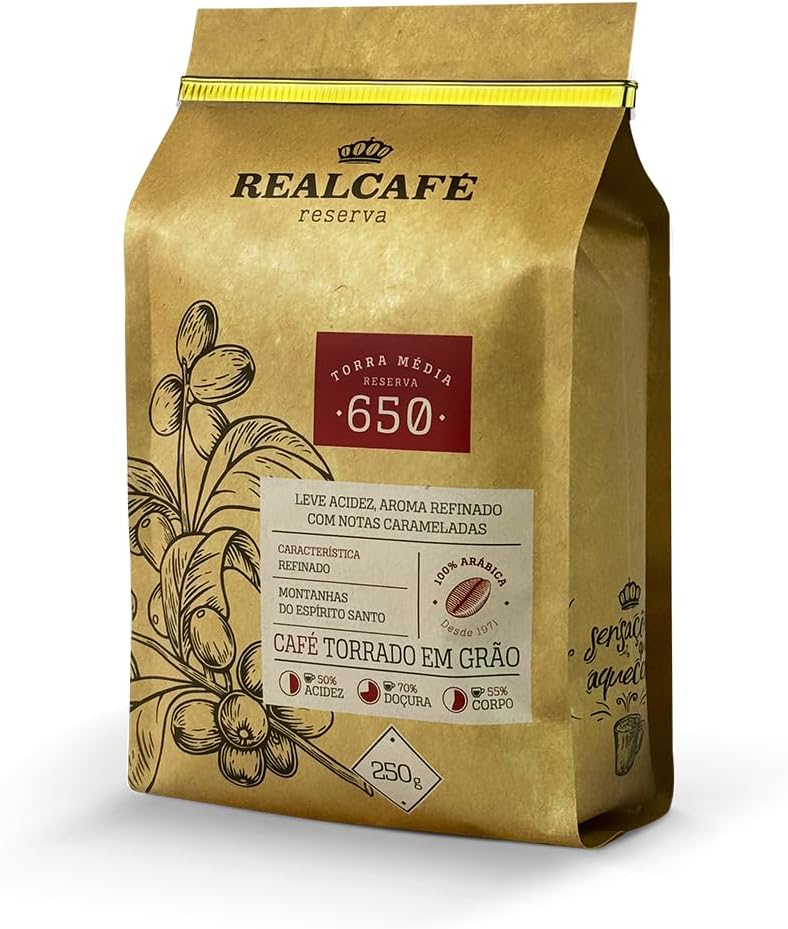

Realcafé Reserva 650 – Grãos 250g
Origem: Montanhas do Espírito Santo
Tipo: 100% Arábica
Torra: Média
Intensidade: 7/10
Peso: 250g
🛒 Comprar Café
Origem: Montanhas do Espírito Santo
Tipo: 100% Arábica
Torra: Média
Intensidade: 7/10
Peso: 250g
🛒 Comprar CaféO Realcafé Reserva 650 é aquele café que chega discreto, embalagem séria, sem gritar “hipster” na gôndola. Mas quando você começa a usar todo dia, percebe que ele está tentando disputar espaço com o seu café “fixo da casa”.
Ele vem das montanhas do Espírito Santo, com selo de café especial e torra média. Os grãos são bem uniformes, sem aquelas surpresas desagradáveis no meio do pacote. Visualmente, é aquele café que já passa confiança antes mesmo de ir pro moedor.
Testei os três mesmos métodos de sempre, pra manter o parâmetro:
No espresso: Aqui o Reserva 650 mostra personalidade. O corpo é encorpado, mas não pesado, e a xícara entrega um equilíbrio interessante entre doçura e amargor. Não é explosivo em aroma como alguns microlotes mais caros, mas é consistente. Pra quem gosta de espresso “presente”, ele entrega.
No coado: No V60, o café fica mais elegante. A torra média dá um perfil menos agressivo, com doçura perceptível e uma acidez moderada, sem exagero. É aquele coado que funciona bem tanto puro quanto acompanhado de um pedaço de bolo.
Na prensa francesa: A prensa ressalta o corpo e deixa o café mais rústico, no bom sentido. Fica ótimo pra quem gosta de sensação de boca mais cheia e final persistente. Não é o método mais “delicado” pra ele, mas é bastante prazeroso.
O Reserva 650 tem cara de café “especial acessível”, mas a verdade é que ele fica muito melhor quando você acerta a moagem e a dose certinha. Se moer muito fino, ele amarga rápido; se moer muito grosso, fica aguado. É aquele café que te recompensa por um pouquinho de paciência.
Sobre cafeína: ele não me derrubou nem me deixou acelerado demais, mas é daqueles que você sente que tomou. Dois espressos seguidos já são suficientes pra ligar o modo produtividade.
Onde ele brilha na harmonização:
Se você quer sair do café de supermercado, mas ainda não quer mergulhar no mundo dos cafés muito caros e cheios de conceito, o Reserva 650 é um ótimo meio-termo. Ele te entrega algo claramente acima da média, sem exigir ritual de barista profissional todo dia.
Não é o café mais aromático que já provei, mas compensa com equilíbrio e confiabilidade. Depois que você acerta ponto de moagem e proporção, dá vontade de repetir o shot.
Gostaria de ver mais informações na embalagem sobre data de torra e tabela sensorial mais detalhada. Para quem gosta de nerdar em café, esses detalhes contam ponto.
"8/10 — Café sólido, honesto e confiável. Perfeito para quem quer um degrau acima do comum sem entrar ainda no universo dos microlotes."
Se o Orfeu é o seu café de fim de semana especial, o Realcafé Reserva 650 é forte candidato a ser o titular dos dias úteis.